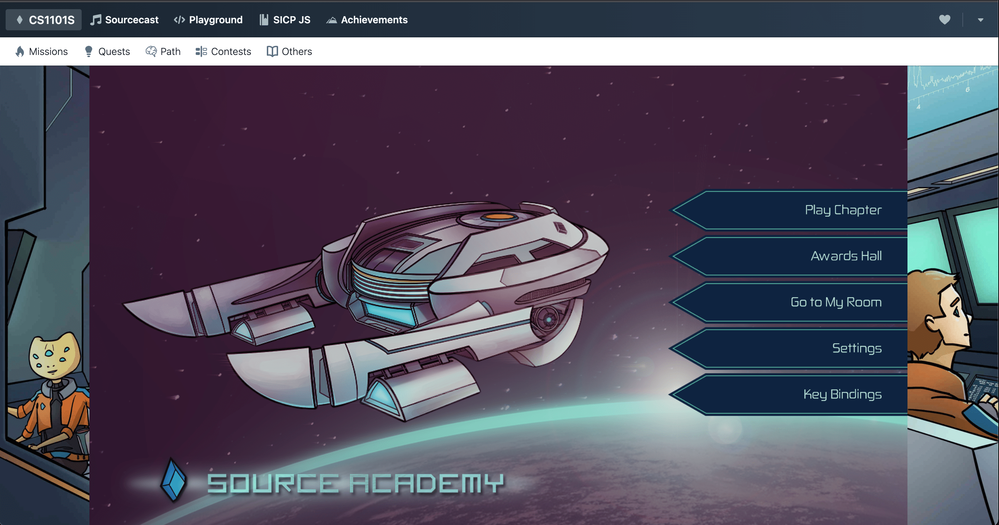
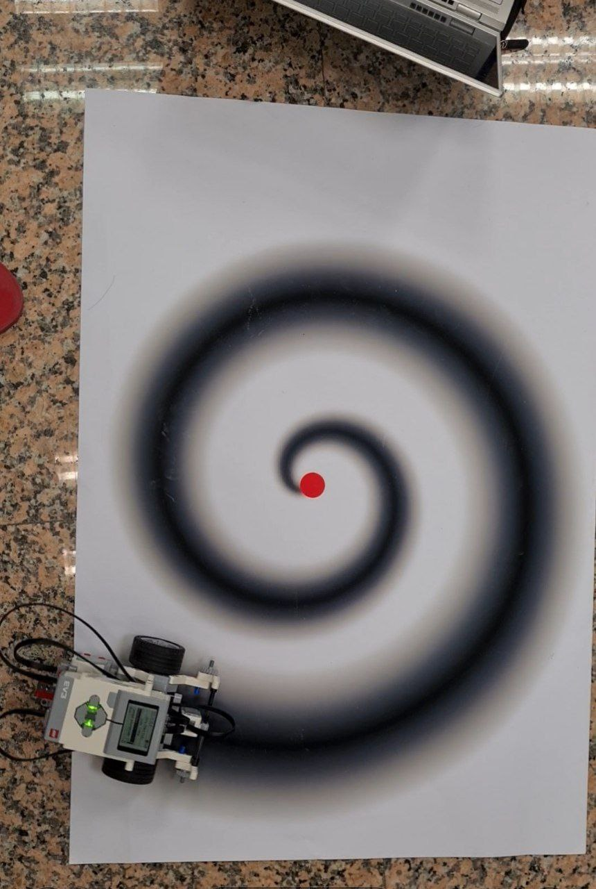
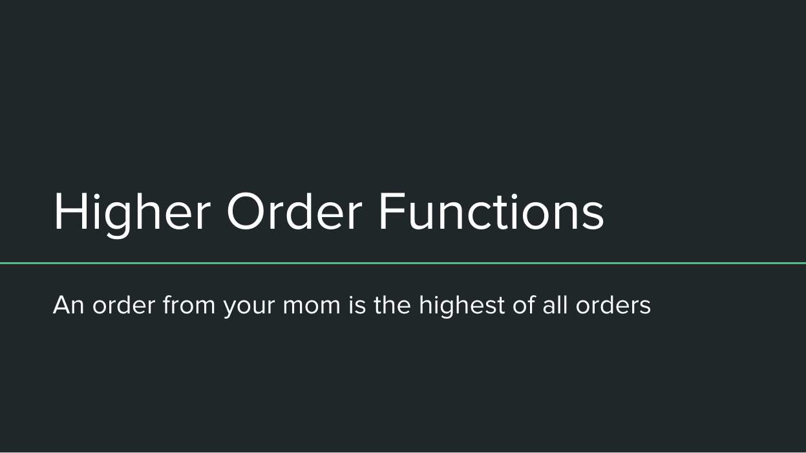
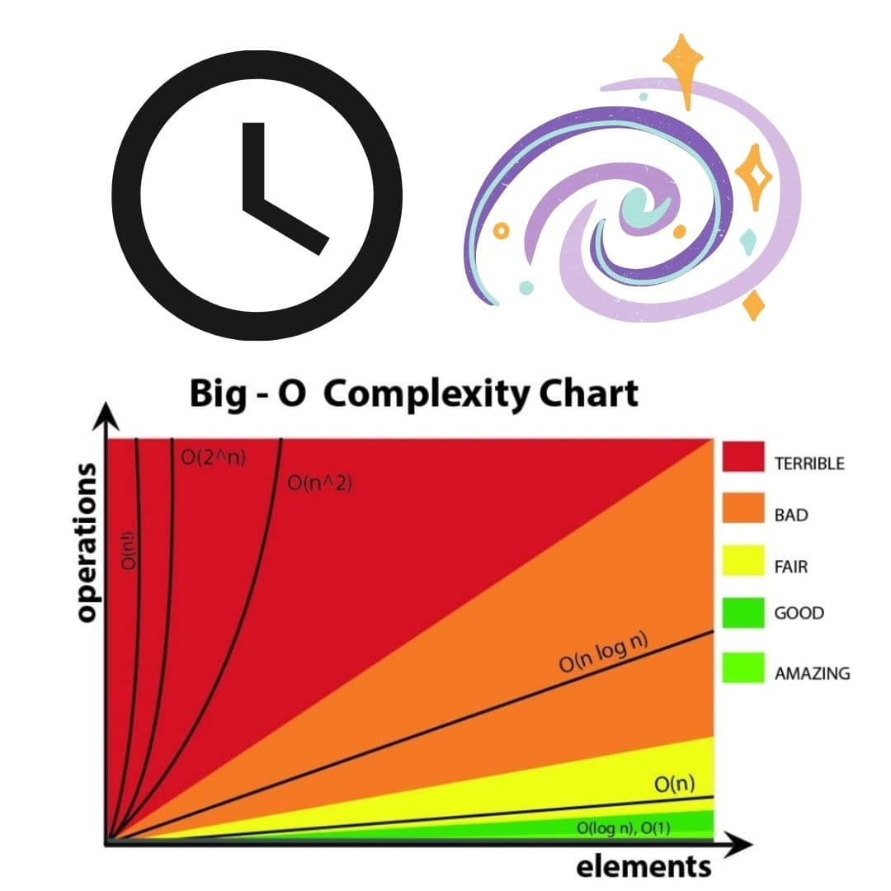
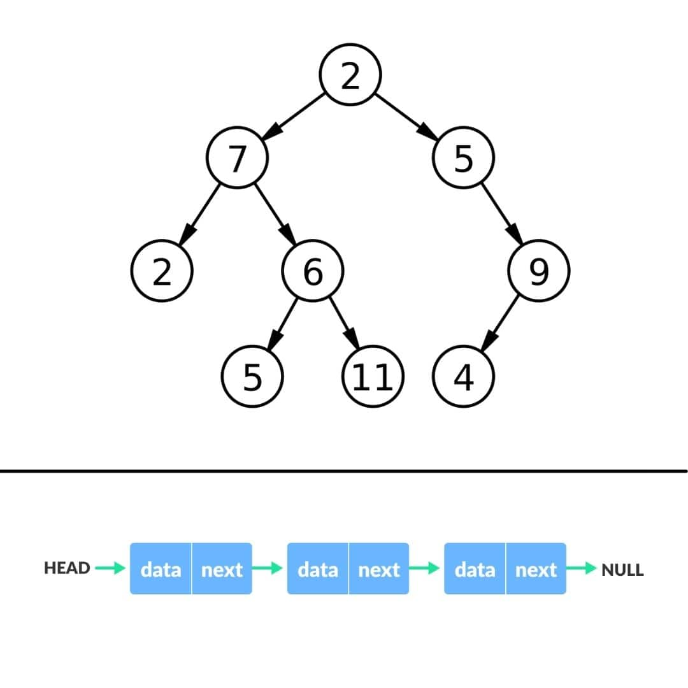

NUS CS1101S: Intro for Incoming Students
Everything to know before you get started


Introduction
In this article, I will be sharing more about what CS1101S is all about - the weekly flow of lectures and briefs, assessments, key concepts and everything you need to know about it. In my opinion, it was the most interesting module in Year 1 Semester 1 but it was also the most rigorous and time consuming one. There were a lot of theoretical concepts to grasp but don’t worry, the fun comes when applying them to watered-down real world situations.
Content Page
What is CS1101S
CS1101S Programming Methodology 1 is unique to Computer Science majors, unlike other introductory modules (CS1010E/X) taken by Business Analytics or Computer Engineering students. It is based on the textbook Structure and Interpretation of Computer Programs, written for MIT’s programming methodology course. Although CS1101S carries 4 modular credits as seen on NUSMODS and the NUS website, it has the workload of 5 modular credits (MC) and you will be given the additional 1 MC through CS1101R (I will explain more of this later).
Details
One distinctive feature of 1101 is the Source language, which is an altered version of JavaScript. Everything is done in Source and there are 4 different versions to them. For example, in Source1 (S1), for loops and variable declarations are banned but you will get to use those keywords in S3, as the module progresses.
A typical week for 1101 students goes along these lines: There is a 2 hour lecture and a 1 hour brief (sometimes it overruns the hour, but 2 hours are allocated to the brief). My suggestion when planning your timetable is to leave the timeslot after 1101 lectures empty as the online lecture usually overrun the allotted time.
Studio is 1101’s version of tutorial, which is another 2 hours of class and they are lessons conducted by Avengers (i.e. your Teaching Assistants, typically a Year 2 CS student). The lessons consist mostly of reviewing the studio worksheet (ungraded homework) and in-class worksheets.
On top of all these, Recitation is a short tutorial of sorts, and is another 1 hour slot to review concepts taught in lectures. There are also ungraded worksheets called reflections that the teacher will use to supplement your understanding.

Source Academy Landing Page
Not forgetting Paths, Missions and Quests; they are graded homework done on Source Academy, an online Integrated Development Environment (IDE). A special feature of Source Academy is the Stepper Tool that allows you to visualise the exact steps the computer takes when evaluating your code. There is also a game that you can play on Source Academy, which is 100% optional. I did not play it so I do not have much input on it, but the game gives a storyline to the Missions and Quests.
All these 3 contribute to EXP that determines your score for the Source Academy component. Paths are simple questions that cement your basic understanding of the lecture, usually a mix of MCQs and short coding questions. One level up are Missions, they are intermediate level questions. I’ve spent a big bulk of my time on these questions. Don’t be fooled into thinking that 3 questions per Mission can be done last minute. At times, just 3 questions can take up to 7 hours, it’s no joke! Despite that, I do believe that struggling and trying your best to achieve a functioning code trains your thinking and perseverance. Lastly, Quests are optional advanced level questions that you can attempt if you have time. My advice is to do at least half of the Quests, to ensure that you can secure the minimum amount of EXP to ensure full marks for this graded component. The additional EXP accumulated beyond the cut off, from Missions, Quests and Paths contribute to your grade for CS1101R. You can see Quests as the additional 1 MC and does not affect the grade for CS1101S.
An alternative way to get more EXP is through participating in Contest. They revolve around the Missions as well. For instance, the Game of Tones Contest, where you can submit code that produces music and the code that has the highest vote wins! I remember some submissions were songs like Never Going To Give You Up and Payphone.

Lego Mindstorm Quest
Just a teaser of what is to come for Missions and Quests - there are chapters about creating music, video streaming, Lego Mindstorm and runes!
Another platform for learning and asking for help is the online discussions platform on Piazza. It is essentially a StackOverflow page where you can ask questions related to 1101 and your peers and professors will answer them. Initially, I thought very little of Piazza. I was already swamped with so much new information and reading through the forum was just a chore. But I realised programming is a lot about discussing with people and sharing thought processes with the community. There were a couple of times where my queries were already posted and answered by others, so Piazza does come in handy.
Assessments
This breakdown is for my year of AY21/22, it might change year on year so this is just a rough outline.
Breakdown
- Final Exam - 30%
- Midterm EXam - 12%
- EXP from Source Academy - 18%
- Practical Assessment- 12%
- Reading Assessment 1 - 6%
- Reading Assessment 2 - 6%
- Mastery Check 1 - 3%
- Mastery Check 2 - 3%
- Reflection Attendance - 5%
- Studio Attendance - 3%
- Studio Participation - 2%
Your first test will probably be Reading Assessment 1 (RA1), it is a full MCQ paper where you will not have access to Source Academy. You essentially become the IDE and evaluate the code. Some questions will ask for the output of the code while others will ask for the order in which the code is run. They are notoriously tricky, so do be careful and analyse the code properly. RA2 is also similar but it should mainly revolve around the Environment Model, while RA1 consists of the Substitution Model, Higher Order Functions and Scoping.
Midterm exams and Final exams are done on Luminus, there is a mix of MCQ and short coding questions. You also do not have access to Source Academy and would have to code in a text editor, so do practice coding with auto-tab completion before the exam.

A slide from my Mastery Check
Mastery Check is a guaranteed pass test, where you give a presentation to your Avenger about some of the concepts that were covered. Afterwhich, your Avenger will quiz you further on your understanding. Avenger will continuously ask you questions until Avenger is convinced that you are confident in your concepts.
This module is also not graded on a bell curve, which means that just as long as you pass a certain benchmark, you will be awarded an A, no matter how many other students have gotten an A as well. In other modules, an estimate of only the top 20% will be awarded the A.
Concepts
For those who are eager to start learning and want a head start for this module, you can continue reading below. I will share, very briefly, some of the most important concepts that this module aims to inculcate in you and you can go read up more about it.
Recursion is one of the biggest concepts in 1101. It is the idea where a function can call itself within the function i.e. a function can be defined by itself. The professors use the idea of wishful thinking to help wrap your head around the abstraction.
function factorial(n) {
return n === 1 || n === 0
? 1
: factorial(n - 1) * n;
}
For example, in the above factorial function, the function calls itself in the body of the code. It might seem a little odd, how can you call a function without fully defining it? Well, recursion is possible because of applicative order reduction (this is also covered in 1101). Using wishful thinking, you believe that your function works and so it can be used within the function itself. And like magic, it really does!
Many of the exam questions require recursion to solve them so it is crucial to fully understand this concept. In the Missions, you will use recursion to play with curves and form fractals, which is really cool!

Time & Space Complexity, Big-O
Another key concept you can read up beforehand is Order of Growth. It refers to a function’s or algorithm’s time and space complexity as the input increases with size. Big Oh-notation measures the worst case possibility of a function. A good proportion of questions in the exam requires you to calculate the big Oh of a function. You can figure it out intuitively, but that might not be the most reliable. Instead, you can read up about recurrence relations that might help with your understanding.

Binary Tree and Linked List
List and Tree Processing is also a big bulk of 1101. The list refers to a linked list, although the professors don’t explicitly tell you that. Map, Filter and Accumulate are list processing functions that are important as well. In most languages, the Accumulate function refers to the Reduce function. Questions in the exam usually take a spin on the definition of lists and trees, and calls for you to tap on your understanding of trees and list to figure them out.
Yet another data type we learn about is Streams. At its core, it is a list that utilizes lazy evaluation and lambda expressions.
const example_stream = pair(1, () => pair(2, () => null));
Lambda expressions are an alternative way of writing functions, it is also known as arrow functions. In this case, the 2nd item in the overarching pair is a nullary function (a function that has no parameters). The nullary function is not executed until it is called upon, unlike normal functions that execute immediately. This gives rise to the notion of lazy evaluation and allows for an infinite stream to be created. As the name suggests, video streaming enlists the help of streams to work. Now you know partially how Youtube videos work!
Merge Sort, Selection Sort and Insertion Sort are all examples of sorting algorithms that you will learn to implement as well. Time and space complexity of these algorithms are intertwined in this chapter as well. Don’t overlook Searching algorithms too, such as Binary Search Tree and Linear Search.
What is one way to improve the time complexity of a function? Memoization is the answer! It is frequently used when a function has many repeated calls to itself with the same parameters. In order to speed up the computational process, the value to the computation is stored in an array and retrieved when necessary, preventing the same repeated computation.
And finally, the MetaCircular Evaluator (MCE) chapter! It is by far the hardest chapter in 1101. Truth be told, I am still unable to do some of the MCE questions. Anyway, it is basically writing an evaluator in Source language to execute programs written in Source. There is no practical use for the MCE but the thinking behind this chapter is for us to gain further insight to the language and build on our understanding of the environment model.
Conclusion
Well, this about sums up what CS1101S is all about. I know it is a lot to take in and it is but worry not, you are in the capable hands of the Avengers and Professors. My advice for this module is to stay on top of the lectures and don’t let them pile up. It might seem tempting to ask your friends for the answers to Missions and Quests, especially when you’ve already spent an eternity on the question. However, I believe that struggling is part and parcel of the learning process, abstain from the allurement and press on! Working together and sharing your thinking process is a better substitute to simply reading the answer. You will definitely become a better programmer this way. That’s all! Stay cool and all the best for the upcoming academic year.